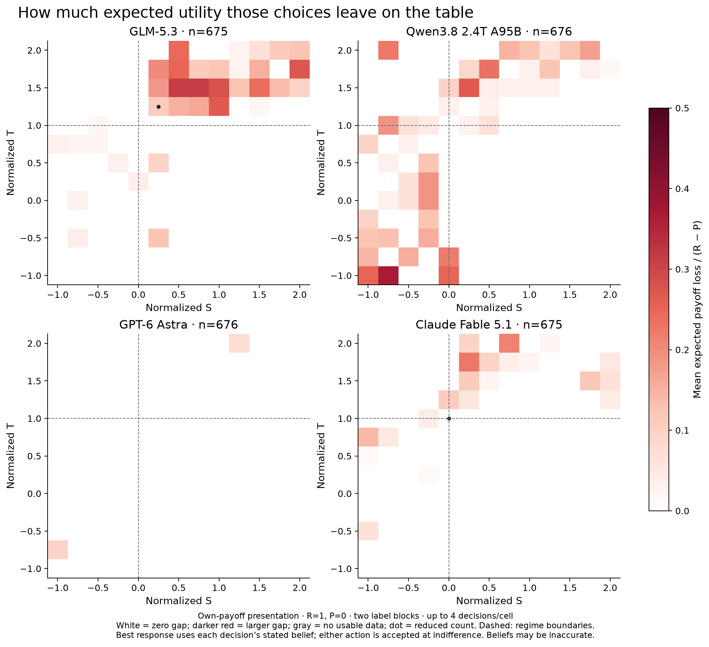

Figures for the post
Four figures: use figures 1 and 2 for the empirical results, figure 3 to explain the theoretical game regions, and figure 4 to show the presentation effect that motivated the clearer-payoff experiment. “Susceptibility” is operationalized here as response to payoff incentives. These are descriptive data with few repeats per cell, not universal model rankings.
Copy-ready captions and methodological limits
Main figure 1: response to payoff incentives
Cooperation frequency across normalized payoffs
Each panel shows one model in isolated, simultaneous self-play. We normalize payoffs to R=1 and P=0, varying S horizontally and T vertically on a 13×13 grid with spacing 0.25. Color is the fraction of individual C choices, averaged within valid joint games: yellow means all observed choices were C and purple means all were D. C and D are analytical labels; prompts used neutral A/B labels, reversed across two blocks. Each cell contains at most two valid games (four decisions). Dashed/red regime boundaries at S=0 and T=1 separate dominance, coordination, and anti-coordination regions. The clearer own-payoff presentation was an exploratory follow-up. Here “susceptibility” means observed response to payoff incentives, not a safety or manipulation score. Most cells are not strict Prisoner’s Dilemma; strict PD occupies S<0, T>1.
PNG · SVG

Main figure 2: deviation in utility units
Expected utility lost relative to the stated-belief best response
At each normalized S–T point, color measures mean expected payoff loss from the chosen action relative to the best response to that decision’s reported opponent-cooperation probability q. The cooperation advantage is Δ(q)=q(R−T)+(1−q)(S−P); loss is max(0,−Δ) after choosing C or max(0,Δ) after choosing D, divided by R−P. White indicates zero loss and deeper red larger loss, on a common scale across models. The own-payoff grid provides at most four usable decisions per cell. Either action is accepted at indifference; a dot marks a reduced count. This is a test of action–belief consistency. Reported beliefs may be inaccurate or post-hoc rationalizations. It is not a displacement of an empirical switching threshold in S–T units.
PNG · SVG

Figure 3: theoretical context
The theoretical phase space of symmetric two-action games
Positive affine normalization maps payoffs to s=(S−P)/(R−P) and t=(T−P)/(R−P), for R>P. This leaves two degrees of freedom and preserves expected-utility incentives. The map shows twelve strict payoff orderings, regime boundaries, and group-payoff boundaries. The repository’s (5,3,1,0) baseline is at (s,t)=(−0.5,2). It is an analytic reconstruction following Falmagne’s SIAM article; no model calls are involved.
PNG · SVG

Figure 4: presentation control
Matrix presentation substantially changes apparent cooperation
The targeted exploratory control compares the same strict-PD payoff cells and first two label blocks under row/column wording and explicit “your payoff / opponent payoff” wording. Each bar contains 32 valid decisions per model and role. Qwen’s column-role C frequency changes from 31/32 to 1/32, while its row-role frequency changes from 0/32 to 2/32. The game utilities and individual-payoff objective are identical, but both payoff perspective and display order change. These observations demonstrate presentation sensitivity without isolating its cause. This control motivated the clearer-presentation grid used in figures 1 and 2.
PNG · SVG